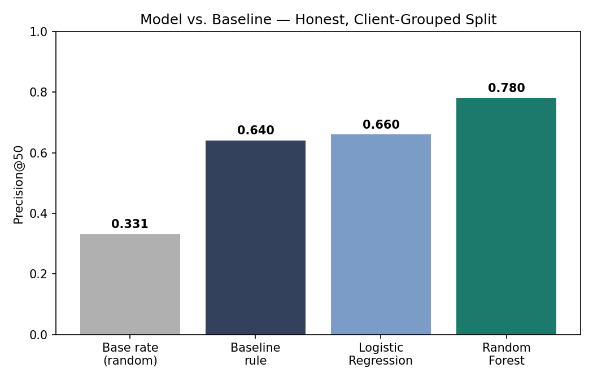
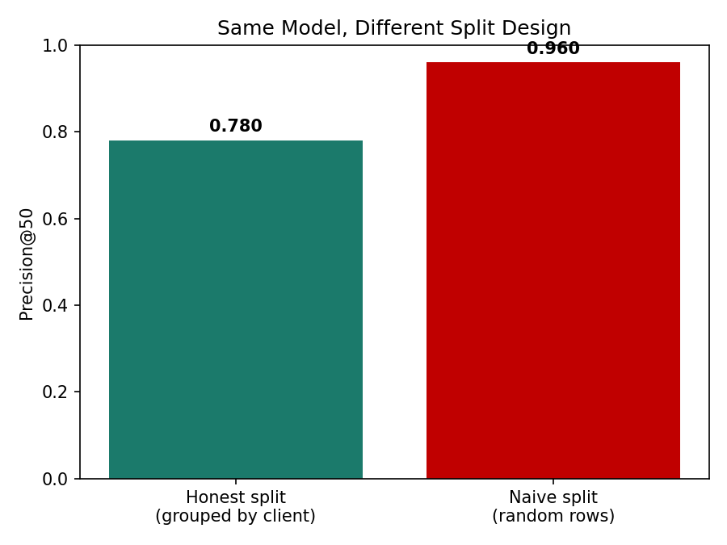
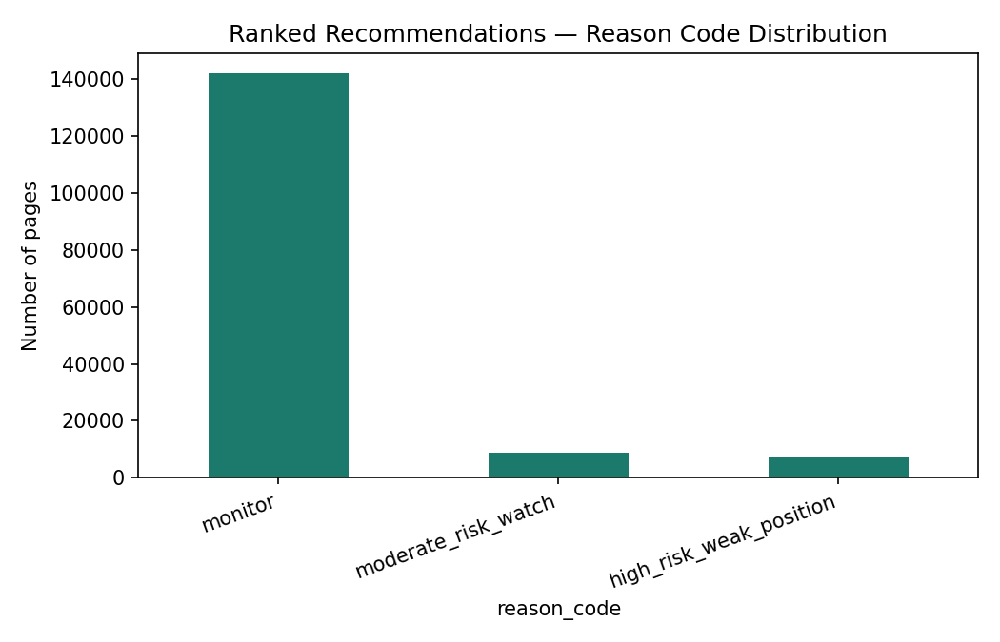

A content reviewer can only manually check a fraction of a client's pages each cycle, so this work asks: which pages are most likely to see a click decline next month? Using one month of real search-performance data (March 2026) to predict the following month's outcome (April 2026), a Random Forest model ranking pages by predicted decline risk reached a Precision@50 of 0.780 on an honest, client-grouped validation split — clearly ahead of a transparent hand-written rule (0.640) and a plain random baseline (0.331). The same model scored 0.920 under a naive random split, a result driven by data leakage rather than real skill, and discarded in favor of the honest number. This page reports the ranked recommendations, their limits, and exactly how the honest number was earned.
A content strategist reviewing a client's site can't look at every page every week. They can look at fifty.
The question this work answers is simple to state and easy to get wrong: of everything in a client's content library, which fifty pages are most worth a human's limited attention this cycle? Picking wrong has two different costs — a wasted review on a page that was fine, or a silently worsening page that never got flagged at all. The second is worse, because it compounds.
A rule-of-thumb answer already exists inside FlyRank's own workflow: flag pages that are visible (real impressions) but poorly positioned. It's transparent, and it beats picking pages at random. The question this paper actually investigates is whether a model trained on real, validated data can beat that rule honestly — and what happens to the answer once the validation design itself is put under scrutiny.
This work uses the FlyRank internship warehouse release (Hugging Face, gated, roughly 79 million rows), specifically the fact_content_daily_performance table, filtered to two month partitions: March 2026 for every feature, and April 2026 used only to determine whether a page's clicks declined the following month.
Rows without a genuine gsc_data_available flag were excluded — much of the raw fact table is a zero-filled placeholder for dates before a client's tracking began, not a real zero-activity day. After filtering, roughly 55 of 104 total clients had usable March data — just over half the client base, a real coverage gap carried honestly through to the limitations below.
No client names, domains, URLs, page titles, or raw search queries appear anywhere in this work — only pseudonymized IDs, used strictly to group and validate, never as model inputs. FlyRank's own internal product-decision fields were deliberately excluded from the feature set, so the model learns from observable behavior, not from a decision FlyRank's product already made.
The label is built the honest way: is_declining = 1 if a page's April clicks were lower than its March clicks, else 0. Critically, this label is built from a genuinely future month relative to the features — not from the same period being used to predict itself, a trap this project's own earlier data-contract work caught and corrected.
| Feature | What it captures |
|---|---|
| march_clicks | trailing observed clicks |
| march_impressions | trailing observed search visibility |
| avg_position | true weighted average search position |
| ctr | click-through rate on real traffic |
Every page belonging to one client stays entirely on one side of the train/test split — never mixed. This matters more than it sounds: a client's own quirks (a particularly good or bad content strategy) could otherwise leak between train and test, letting a model "cheat" by partially recognizing a client it has already seen, rather than learning something a genuinely new client would benefit from. The next section shows exactly what happens when this rule is skipped.
Confirmed no April data appears in any feature. Confirmed no feature is mathematically derived from the label within the same time window. Confirmed no single feature dominates the model suspiciously (all four contribute; the top feature sits at 0.48 importance, not 0.90+). Confirmed no FlyRank internal product-decision field was used as an input.
Three approaches were compared on the exact same held-out test set, the same metric, in the same run: a plain random baseline, FlyRank's existing hand-written rule, and two trained models.
| Approach | Precision@50 |
|---|---|
| Base rate (random) | 0.331 |
| Baseline rule (hand-written) | 0.640 |
| Logistic Regression | 0.660 |
| Random Forest | 0.780 |

The same Random Forest model, evaluated instead under a naive random row-level split, reports Precision@50 = 0.920 — a striking 14-point jump. It looks like a better model. It isn't. That split let 44 of the same clients' pages appear on both sides of the train/test divide, so part of that score is the model partially recognizing clients it already learned from, not genuine skill on unseen ones.

The 0.780 figure is the number this paper reports and stands behind. The 0.920 figure exists on this page only to make the leakage lesson concrete.
Pages are ranked by predicted decline risk and assigned one of four reason codes, so a reviewer knows not just that a page was flagged, but why.

| Reason code | Action |
|---|---|
| high_risk_weak_position | Review for position + CTR fix |
| high_risk_low_ctr | Review for CTR fix |
| moderate_risk_watch | Monitor next cycle |
| monitor | No action needed |
Every flagged page still needs a human to open it, read it, and decide — this ranks the queue, it doesn't replace the reviewer.
Every number on this page traces back to a notebook in the linked repository, runnable end to end with a free Hugging Face account and the same random seed (42) used throughout.